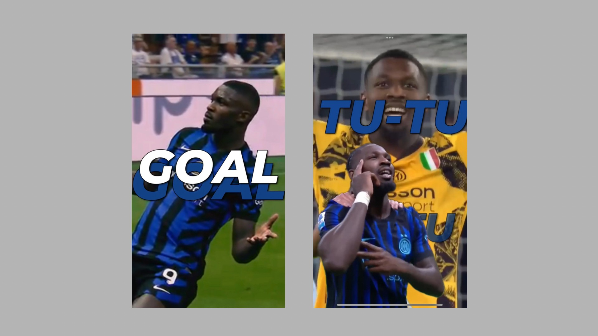
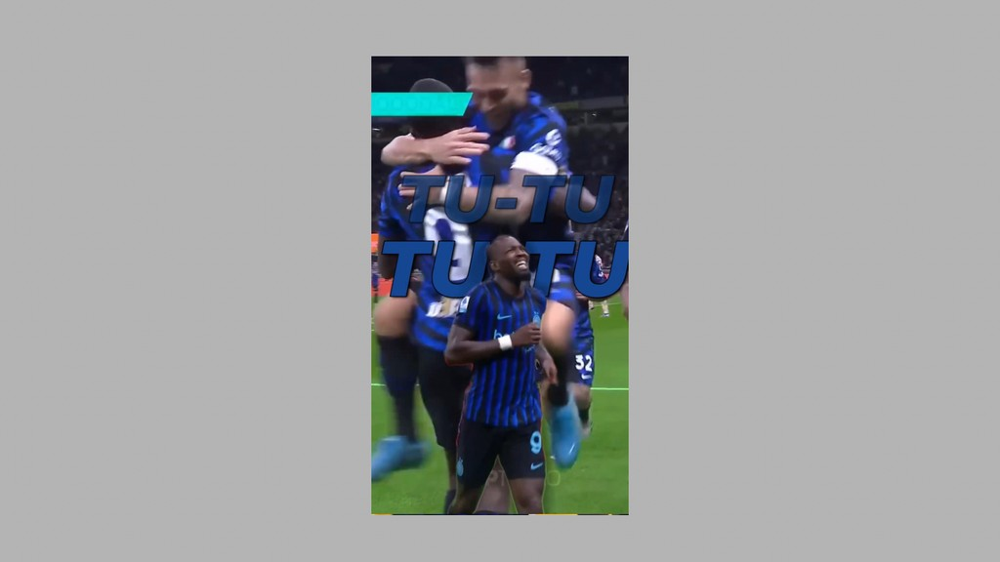
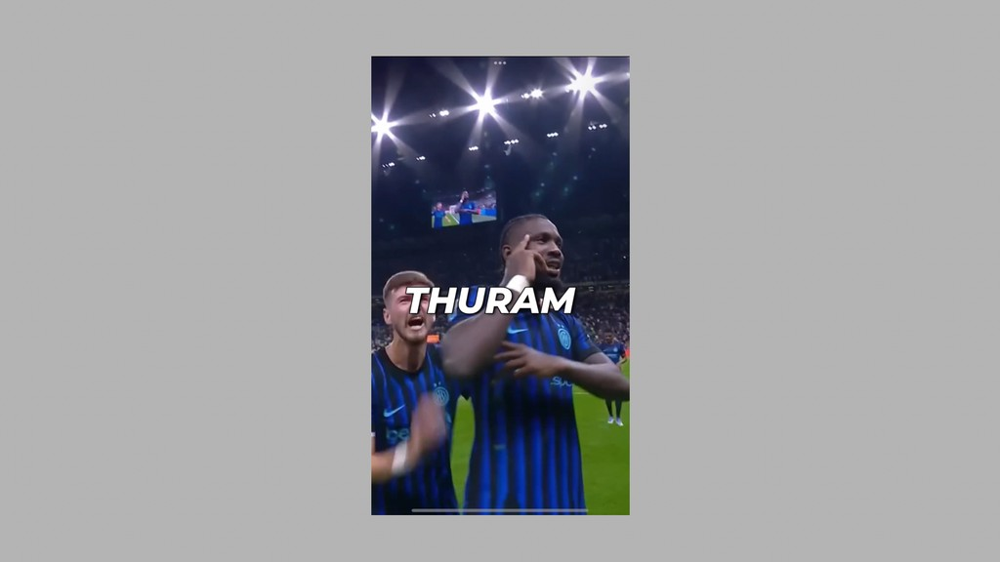

Video Editing
Built on Rhythm, Crafted for Visual Impact.

Short-form edit dedicated to Marcus Thuram, built to enhance rhythm, intensity and visual impact through fast cuts, beat-driven transitions and dynamic pacing. The video focuses on athletic movement, presence and character, translating football performance into a visually engaging narrative suited for social platforms.
Video

This edit was produced using Filmora, with full awareness of platform-specific formats and engagement logic (TikTok-first). Beyond this project, I am fully capable of working with DaVinci Resolve, Adobe Premiere Pro, CapCut and Procreate, adapting my workflow to advanced colour grading, professional timelines, and creative motion or graphic-driven edits, depending on the project’s needs.
VideoThe goal was not only technical execution, but storytelling through motion, music and timing — turning performance into emotion.
Where Motion Meets Identity.